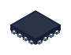
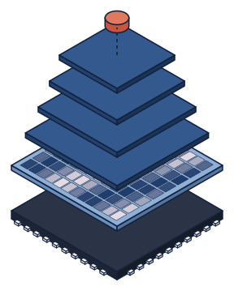
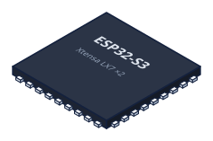

Análisis de Sistemas y Señales Digitales · Trabajo de investigación
Para la implementación en hardware de un asistente de IA para odontólogos


I. Beamforming de array endfire de micrófonos MEMS
II. Detección de palabra de activación en microcontrolador
Dante Barili
Juan Förster
Mauricio Garavani
Bautista Mijalovich
Noviembre 2026

Órbita en el consultorio
ContextoArrastrá para girarlo
Dispositivo de escritorio sin pantalla: escucha la consulta, reconoce su nombre y manda el audio a una IA que completa la historia clínica.
Este trabajo cubre los dos bloques de señales que corren en el chip.
01
Beamforming
Cómo dos micrófonos separados 21,4 mm pueden preferir la voz que llega de frente: geometría, algoritmo, la demostración del hipercardioide y su ecualización.

Objetivo: directividad en un array chico
BeamformingCaptar la voz del odontólogo, que llega de frente, y no el ruido de la sala, que llega de todos lados.
Factor de directividad: lo que capta de frente contra el promedio de todas las direcciones.
Los mics están mucho más juntos que la longitud de onda \(\lambda = c/f\) (lo que avanza el sonido en un período): les llega casi igual.
6 dB
lo máximo que se puede lograr con 2 micrófonos: el hipercardioide
0 dB
voz de frente
−12 dB
costados
−6 dB
ruido de sala
Delay-and-sum contra delay-and-subtract
BeamformingEn los dos casos al mic 2 se le agrega un retardo \(T\). El retardo total entre las dos señales es \(\Delta = T + \tau_0\cos\theta\), con \(\tau_0 = d/c\).
Suma (delay-and-sum)
Con mics tan juntos \(\omega\Delta \ll 1\) y el coseno vale ≈ 1 para todo \(\theta\): la suma no distingue direcciones.
Resta (delay-and-subtract)
Lo común se cancela: \(|H_-| \approx \omega|\Delta|\), que depende de \(\theta\).
| Ganancia contra ruido difuso, d = 21 mm (simulación) | 500 Hz | 1 kHz | 4 kHz |
|---|---|---|---|
| Delay-and-sum | 0,0 dB | 0,1 dB | 0,9 dB |
| Cardioide (resta, T = τ₀) | 4,7 dB | 4,7 dB | 3,0 dB |
| Hipercardioide (elegido) | 6,0 dB | 6,0 dB | 5,1 dB |
Geometría: broadside contra endfire
BeamformingAl segundo mic el sonido le llega más tarde:
Con \(\tau_0 = d/c\), la separación \(d\) da un retardo de exactamente una muestra: un \(z^{-1}\), sin interpolar.
- Broadside: llega a los dos a la vez; la resta lo cancela.
- Endfire: \(+\tau_0\) de frente, \(-\tau_0\) de atrás; eso usa la resta.
Suma contra resta, en vivo
Beamforming · interactivoCurvas normalizadas a su frente; radio de 0 a −30 dB.
Implementación con dos cardioides
BeamformingEn graves (\(\sin x \approx x\)) los cardioides son
La resta es una mezcla de omni y figura-8:
Con \(\beta = \tfrac12\) sale el hipercardioide:
De dos cardioides al hipercardioide
Beamforming · interactivocF
−
β·cB
=
y
Punteado: lóbulo con polaridad invertida. Pasá el mouse sobre y para leer cada ángulo.
Respuesta en frecuencia, sin corregir
BeamformingEn graves, restar es derivar: lo común se cancela y queda la pendiente.
- +6 dB/oct: el nivel sube con \(\omega\).
- A 200 Hz la voz de frente queda −16,1 dB bajo un solo mic.
Modelo exacto, d = 21,4 mm. Pasando ~3 kHz la recta deja de valer (sin x ≠ x).
El ecualizador
BeamformingDe frente \(x_2[n] = x_1[n-1]\), así que \(c_B = 0\) y
\(1 - z^{-1}\) es un derivador: +6 dB/oct.
Se cancela con su inversa, el integrador:
Con pérdida, para no saturar con la continua:
Implementación en el ESP32-S3
BeamformingPor qué se corta a 4 kHz
Arriba de ~4 kHz el frente del hipercardioide cae (−3 dB a 4 kHz, −16 dB a 7 kHz) y se pierden consonantes. Arriba del cruce va el mic de adelante solo:
\(x_1[n-1]\): una muestra atrás para quedar en fase con el hipercardioide, que de frente vale \(\approx \tfrac12(x_1[n] + x_1[n-1])\).
Qué cuesta
LP y HP son dos biquads Butterworth en cascada cada uno: sumados dan módulo plano.
Arriba de 4 kHz la directividad es la de un mic solo (0 dB). Ahí la voz tiene poca energía.
Simulado: frente dentro de −2 dB de 200 Hz a 7 kHz. Pasaaltos de 70 Hz antes de restar: el integrador sube los graves hasta 17,5 veces.

02
Wake word
Detectar “Órbita” en el microcontrolador: el chip, el framework, los datos, el espectrograma que ve la red, la red y cómo decide cada 30 ms.
Objetivo: escuchar una palabra, en el chip
Wake wordEl dispositivo escucha todo el tiempo, pero el audio sale a la red recién cuando alguien dice “Órbita”.
Una función aprendida, evaluada cada 30 ms, más un comparador:
Privacidad
en un consultorio no se transmite nada hasta la palabra
Latencia
la decisión no depende de la red
Costo
sin streaming continuo al servidor
Límite
tiene que entrar en KB de RAM y en una fracción de un núcleo
¿Por qué ESP32-S3?
Wake word
| Del datasheet (v2.2, “Features”) | Para qué sirve acá |
|---|---|
| 2 núcleos Xtensa LX7, hasta 240 MHz | captura y DSP en uno, red en el otro |
| Bus de 128 bits e instrucciones SIMD | registros de 128 bits: 16 valores int8 por instrucción |
| 512 KB de SRAM + PSRAM octal (8 MB en el N16R8) | modelo y arena en interna, buffers de audio en PSRAM |
| Dos interfaces I2S | mics por una, amplificador por la otra |
| Wi-Fi 802.11 b/g/n y Bluetooth LE 5 | WebSocket al servidor, en el mismo chip |
×14
convolución 1×1 int8 con ESP-NN frente a C portable (README de ESP-NN)
2300 → 54 ms
detección de personas (int8) sin y con ESP-NN, a 240 MHz
Framework: microWakeWord + TFLite Micro
Wake wordMismo frontend en PC y chip. Si el espectrograma difiere, el modelo falla sin avisar.
int8. 4 veces menos memoria y cuentas enteras, que acelera el SIMD.
Streaming. Cada llamada procesa solo 30 ms nuevos.
Memoria fija. Arena reservada al arrancar, sin malloc.
Datos de entrenamiento
Wake word| Conjunto | Qué es | Cantidad (v0) | % del lote | Penalidad × clase |
|---|---|---|---|---|
| Positivos | “Órbita” sintético, ElevenLabs, voces rioplatenses | 11.727 clips | 12 % | 2 × 2 = 4 |
| Confundibles | palabras parecidas a “órbita” | 5.659 clips | 12 % | 5 × 40 = 200 |
| Español leído | OpenSLR, Common Voice | 22,3 h | 8 % | 2,5 × 40 = 100 |
| Español conversación | PRESEEA, CORdeBA | 34,2 h | 23 % | 3 × 40 = 120 |
| Negativos de microWakeWord | habla en inglés, charla de cena, ruido y música | ~900 h | 46 % | 40 a 120 |
| Evaluación | entrevistas en español: eligen el mejor punto y miden | 6,3 h + 5,3 h | 0 % | no entrena |
Aumentación: ruido (SNR −5 a 20 dB), eco de salas reales y volumen. Las voces reales quedan para el test.
Features: del audio al espectrograma
Wake wordcon \(L = 480\) (30 ms), \(H = 160\) (10 ms) y \(N = 512\).
Las ventanas se solapan dos tercios: cada instante entra en 3 columnas seguidas.
Reducción de ruido: sigue el piso de cada banda y lo resta:
PCAN: un AGC por banda:
Forma de Wang et al. (2017); TFLM usa una versión entera.
La ventana que arma el espectrograma
Wake word · interactivoVentana × Hann (480 muestras)
|X[k]| en dB y los 40 filtros mel
columna
Features del microfrontend (lo que ve la red): 40 bandas × una columna cada 10 ms
La red, etapa por etapa
Wake wordk: columnas que mira cada filtro · p: paso, columnas que salta la ventana
Paso 3: la ventana de Conv 1 salta de a 3 columnas, así que 170 → 56. Por eso cada inferencia procesa 30 ms nuevos.
La ventana punteada es lo que mira una salida: columnas enteras, porque las convoluciones son solo en el tiempo.
Cada bloque: un filtro en el tiempo para cada canal por separado (depthwise, un FIR por canal) y después una mezcla de canales (pointwise).
MixConv: la mitad de los canales con un filtro corto y la otra mitad con uno largo, para mirar dos escalas de tiempo a la vez.
La red: MixedNet
Wake word · interactivoPasá el mouse por una neurona para ver qué parte de la entrada mira.
¿Por qué MixedNet? Red convolucional diminuta (~24.000 pesos, 61 KB), hecha para un microcontrolador.
La entrada tiene 40 bandas. Después, cada canal es un patrón aprendido (32 o 64 por paso), ya no una frecuencia.
Depthwise: cada canal por separado. Una ventana de k pasos se desliza en el tiempo y los pondera con k pesos (el filtro).
MixConv: grupos de canales con ventanas de distinto largo (7 y 11 pasos): detalle corto y más contexto.
Entrenamiento
Wake wordPérdida: entropía cruzada, pesada por conjunto:
Descenso por gradiente (Adam):
45.000 pasos en una A100 (~75 min). Mejor punto: paso 11.000.
La validación se estanca mientras el entrenamiento baja: empieza a memorizar.
Streaming y cuantización
Wake wordUna red con memoria
Cada convolución guarda sus últimas entradas, como la línea de retardo de un FIR:
Cada llamada procesa solo 3 columnas nuevas (30 ms).
Campo receptivo, en columnas de entrada:
De float32 a int8
Enteros de 8 bits con escala y cero, como un ADC:
Escalas medidas con 500 espectrogramas de entrenamiento.
| Forma | Tipo | |
|---|---|---|
| Entrada | [1, 3, 40] | int8 |
| Salida | [1, 1] | uint8 → p = q/256 |
De la probabilidad a la detección
Wake word · interactivoAudio real pasado por el orbita.tflite del firmware (int8, streaming).
Resultados en simulación
Wake wordEntrenamiento v0 (paso 11.000, int8, umbral 0,4)
90 %
“Órbita” sintéticos detectados
0
falsas en 5,3 h de entrevistas
37 %
con 30 grabaciones reales
Hallazgo: la brecha entre voces sintéticas y reales. El v1 suma voces reales al entrenamiento.
Conclusiones y trabajo futuro
CierreConclusiones
- Con 2 mics tan juntos, restar rinde lo que sumar no: 6 dB de directividad debajo de 4 kHz; arriba, el mic de adelante solo.
- La resta sube +6 dB/oct; un integrador con pérdida la deja plana en la banda de voz.
- Una red int8 de ~24.000 pesos detecta el 90 % de los “Órbita” sintéticos, sin falsas en 5,3 h de entrevistas.
Trabajo futuro
- v1 del modelo con voces reales y falsas activaciones recolectadas.
- Medir en la placa: patrón del beamformer, detección por distancia y uso de CPU.
- Cancelación de eco para detectar mientras suena el parlante.
Referencias
Cierre- G. W. Elko y A.-T. Nguyen Pong, “A simple adaptive first-order differential microphone”, IEEE WASPAA, 1995.
- J. Benesty y J. Chen, Study and Design of Differential Microphone Arrays, Springer, 2012.
- InvenSense, nota de aplicación “Microphone Array Beamforming” (broadside y endfire); ST, DT0117.
- Y. Wang et al., “Trainable frontend for robust and far-field keyword spotting”, IEEE ICASSP, 2017 (PCEN).
- M. Tan y Q. V. Le, “MixConv: Mixed depthwise convolutional kernels”, BMVC, 2019.
- K. Ahrendt, microWakeWord, github.com/kahrendt/microWakeWord (commit 4665173).
- TensorFlow Lite Micro y su microfrontend, github.com/tensorflow/tflite-micro.
- Espressif, ESP32-S3 Series Datasheet v2.2; ESP-NN, github.com/espressif/esp-nn.
¿Preguntas?
Gracias. Código y simulaciones del proyecto Órbita: firmware ESP-IDF, simulaciones en Python y entrenamiento del modelo.